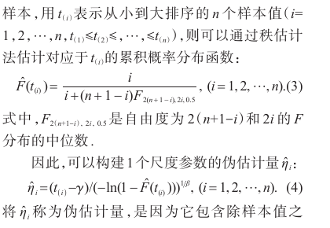
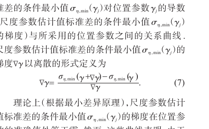

保留供查阅；当前审阅以程序和计算过程的整体呈现为主。这里不接收提交，也不代表任何未定方案已被采纳。
论文的伪尺度离散度、条件最小差异与正偏移已在现行程序中体现。
本轮已确认保留：Bernard默认近似秩、连续数值求解和现有右端外推返回规则。估计算法不变。下文保留原文与实现的差异说明，作为同一个 mdm.py 的实现口径；右端外推不表述为已验证的方程根。
给定位置和形状，每个观测反算一个伪尺度；在固定位置处最小化其标准差，最终尺度取均值。
182-046 原文 L65–76 · 式(3)(4)；182-046 原文 L133–146 · 式(6)(7)这不是直接把β、γ联合调到最小标准差，也不是按真值选择偏移。
python/methods/mdm.py · L121–126
121 def calculate_eta_std(beta, gamma, current_t):
122 if beta <= 0: return float('inf')
123 denom = np.power(neg_ln_1_minus_F, 1.0/beta)
124 etas = (current_t - gamma) / denom
125 return np.std(etas, ddof=1)
126 标准差分母：代码取 ddof=1；本次核对的原文段落未明确分母。若改变分母，梯度和固定δ的含义一起改变，不能当成无关的代码清理。
当前实现
MDM默认 rank_method="bernard"，精确秩已是同一程序的可选参数。
64 i = np.arange(1, self.n + 1)
65 if self.rank_method == 'exact':
66 return betaincinv(i, self.n - i + 1, 0.5)
67 else: # bernard
68 return (i - 0.3) / (self.n + 0.4)
69 核对判断：属于绘图概率定义的替换，不能只说“程序流程完全对应原文”。
可能修改：如确定以2025年式(3)作为方法定义，在mdm.py中把默认秩改成精确式，计算、流程说明及概率图一起更新。
影响：会改变伪尺度、β、γ、η；历史结果按旧源码追溯。AI偏移模型原有训练口径也需重新评估，不能只切换网站默认值。
不改变估计；明确标示Bernard近似与原文式(3)的差别。
原文依据
位置从最小观测向下搜索；形状序列举例0.10、0.11、0.12……最大值如20；式(7)给离散前向差分。
182-046 原文 L123–127 · §2搜索描述；182-046 原文 L141–146 · PDF第4页／印刷111页上式用h重写增量，避免原式中梯度与增量的符号混用。论文没有写全γ步长、下界、多交点与停止规则。
当前实现
β在0.1–15内连续有界优化；内部位置梯度主要用中心差分，靠近边界用单侧差分，再用Brent求g(γ)=δ。60点几何曲线同时用于诊断。
python/methods/mdm.py · L168–177
168 t_min_float = float(t_min)
169 scale = max(abs(t_min_float), 1.0)
170 nominal_h = scale * 1e-5
171 left_room = max(gamma, 0.0)
172 right_room = max(t_min_float - gamma, 0.0)
173
174 if right_room <= 0:
175 return float("inf")
176
177 if gamma <= 0.0 or left_room <= nominal_h:python/methods/mdm.py · L150–155
150 res = minimize_scalar(
151 beta_objective,
152 bounds=(0.1, 15.0),
153 method='bounded'
154 )
155 beta_sigma_cache[cache_key] = (res.x, res.fun)核对判断：统计构造有对应，但具体数值算法不同。连续算法不因不同就必然错误；离散算法也不因更像论文就自动更准确。
可能修改：先确定是否要求按离散构造计算。若采用，应在mdm.py中统一实现，并明确β步长、上限、γ序列及差分点归属；不能为凑图4的1025反推网格。
影响：影响离散误差、速度、根的位置和无交点概率。当前理想样本测试验证的是连续程序，不是原图4逐值复现。
保留现有估计口径，补清差分尺度、括根与网格的作用，准确说明与论文的数值差别。
原文依据
论文以梯度达到正偏移的位置定位，δ=.1是120个案例的经验值。
182-046 原文 L149–159 · §3本次核对未见“近支撑端点自动设为交点”的规则；γ≥0截断和多交点选择也需作为项目规则说明。
当前实现
g(0)≥δ时取γ=0；右端探测仍不足δ时，取极靠近最小观测的内部点，并记录 virtual_gradient=offset。该位置不是已验证的方程根。
python/methods/mdm.py · L233–239
233 return {
234 "gamma": virtual_gamma,
235 "anchor_gradient": float(anchor_gradient),
236 "virtual_gradient": float(offset),
237 "model": "right_endpoint_asymptote",
238 }
239 核对判断：右端外推是当前增加的返回规则。真实过程图已将其标为外推，但run仍可能作为成功返回；显示真实不等于判据已满足。
可能修改：优先决定外推结果的成功语义，再单独讨论非负位置约束；不能用人为目标梯度证明找到根。
影响：改为失败会减少成功样本，并改变蒙特卡洛成功率和按成功样本汇总的统计。若保留近似估计，应与已达判据的结果区分。
保持结果与成功口径；继续清楚显示right_edge_fit和未验证残差。
精确秩见PDF第2页式(3)；离散差分见第4页式(7)。


| 核对输入 | β | η | γ |
|---|---|---|---|
| 理想样本，bernard秩，δ=0 | 1.9889272 | 998.32856 | 1001.8437 |
| 理想样本，bernard秩，δ=0.1 | 1.9813463 | 995.72946 | 1004.2661 |
| 理想样本，exact秩，δ=0 | 2.0000003 | 999.99994 | 1000 |
| 理想样本，exact秩，δ=0.1 | 1.9999762 | 999.99297 | 1000.0068 |
原图4：δ=0时γ=990；δ=.1时γ=1025。原位置步长未完整给出，不能要求本连续程序逐值匹配。
本轮重新执行七个方法的既有原文/公式套件，共80项通过。通过的是已覆盖的公式、若干算例和边界；不是原文所有算法步骤、数据及蒙特卡洛表已复现。上表为少量确定性核对，不是新蒙特卡洛性能结论。
谢里阳等，2025 · 基于统计最小差异原理的Weibull分布参数估计方法
当前方法入口：python/methods/mdm.py。核对时间 2026-11-02T12:51:05+08:00；Git基线 2b3d01383c，工作区含未提交改动，以下哈希标识本轮实际文件。
入口SHA-256 ac2b4354e492cf17cb0bb55f6a8e84b5ca07e74f79f0e6289a16eedd4dd24381
查看逐项原文与源码摘录 · 查看来源与哈希 · 其他方法
摘录用于本轮讨论，不是另一份可编辑的算法实现。源文件变化后应重新核对；审阅期间不修改估计器或原论文。